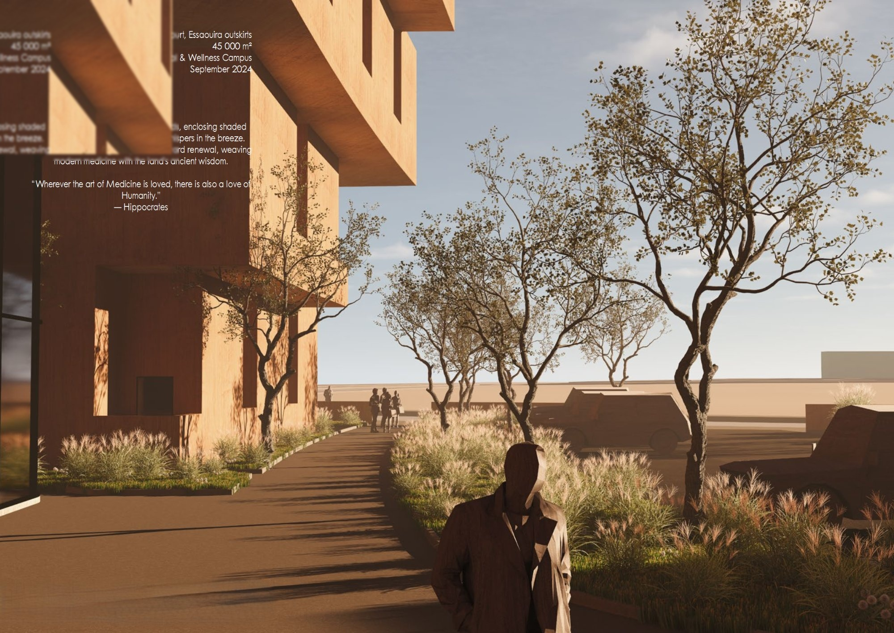
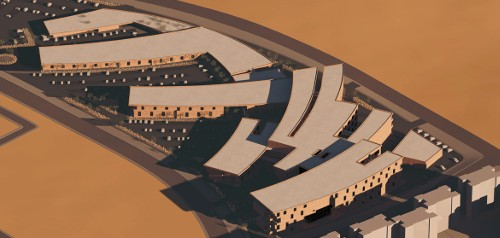
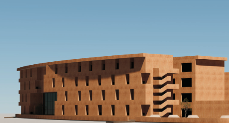

PRO · Healthcare
Tamansourt Campus
A hospital and wellness campus on the outskirts of Tamansourt, a planned city in the Marrakech metropolitan region. The programme combines a general hospital, a specialist wellness centre, and ancillary support facilities on a greenfield site, with the master plan organised to allow phased construction while maintaining functional coherence at each stage.
The architectural proposal structures the campus around a central landscaped spine that connects arrival, administration, and clinical zones in a legible sequence. Patient wards are oriented to maximise natural light and ventilation while minimising solar gain in the summer months. The wellness centre is separated from the hospital by a planted courtyard, creating a clear spatial and experiential distinction between the two programmes. The project was developed by the team at Yassir Khalil Studio at feasibility and schematic design level, with full BIM coordination between architectural and engineering disciplines.
Render, Campus Aerial

Render, Street Facade
